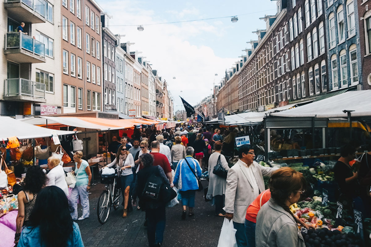

Activities
1. Visit the beautiful parks!
I’d say the best part of Amsterdam (aside from its incredible architecture and canals) are the amazing parks. They are filled with beautiful plants and flowers and feel like you are stepping into a fairytale (at least on a sunny summer day). If it’s a nice day, the Dutch love to go to the parks and have picnics/drinks with friends. It’s a great vibe.Vondelpark
Vondelpark is centrally located near the Rijksmuseum and Iamsterdam sign. There's beautiful folidage and lots of park to see. It can get busy on nice days but there's room for everyone!Oosterpark
Oosterpark is located in Amsterdam Oost. The Generator Hostel sits right next to the park.Sarphatipark
Sarphatipark is located near Albert Cuyp market in the de Pijp neighborhood. The park is smaller than Vondelpark but still beautiful and a great spot to hang out.Amstelpark
Amstelpark is farther from city center, but a very pleasant bike ride away. You can also take the metro to RAI Station and walk to the park from there. Amstelpark has a mini kids amusement park thing with llamas!Amsterdam Bos
Amsterdam Forest is a giant park located in Amstelveen. It can be a hike to get to and is probably only reachable by bike/car. However, due to its distance from the city center, you will be amazed by the park’s sheer size, beauty, and lack of tourists.Pure Markt
Throughout spring/summer and maybe fall, there is a little traveling market that takes places in a different park each Sunday. It has 30-40 stalls of different vendors selling anything from food to handmade goods.2. Go on a canal cruise
Another great way to see the city (apart from bike) is by boat. I went on two cruises with BoatAmsterdam.com (its 15 euros for a 70 minute canal cruise with unlimited beer, wine, and soft drinks). I highly recommend going on a canal cruise during your stay. Seeing the city by canal is incredible.3. Visit the outdoor markets
Albert Cuyp Market
The Albert Cuyp market in the adorable De Pijp neighborhood. De Pijp is home to Sarphatipark and ton of cute cafes and boutiques. This market is one of the more touristy markets, but still cool to see. You can find food, cheese (you must try Dutch gouda cheese), souvenirs, accessories, and more. Grab a fresh stroopwaffle dipped in chocolate for a sweet treat!